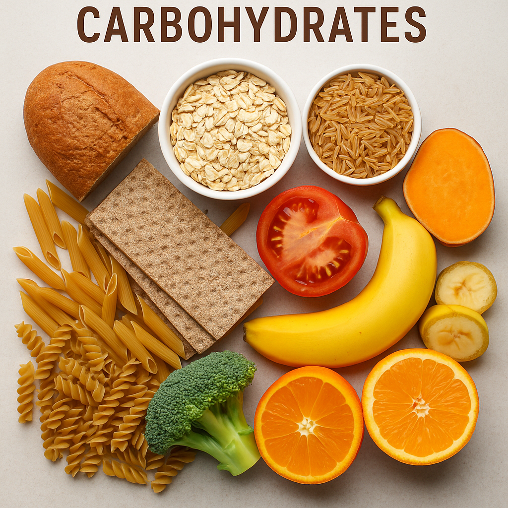
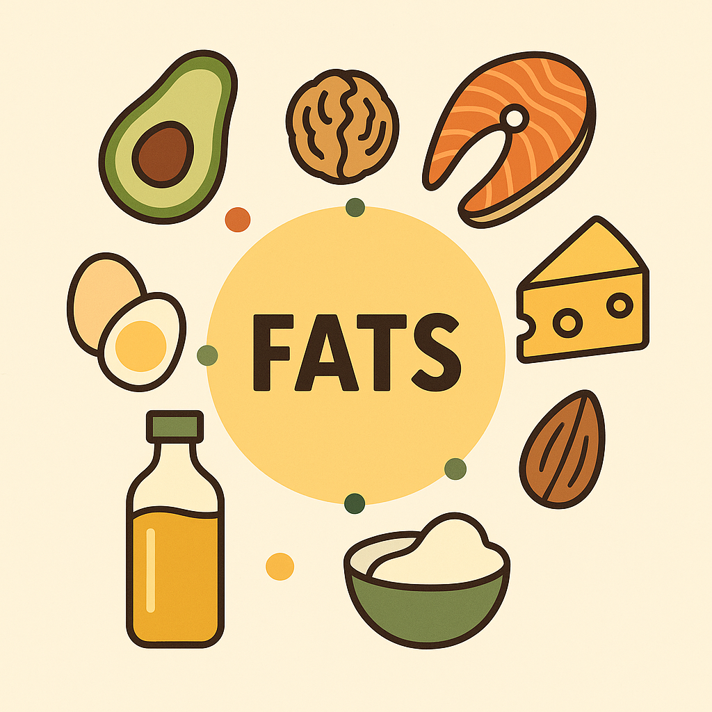
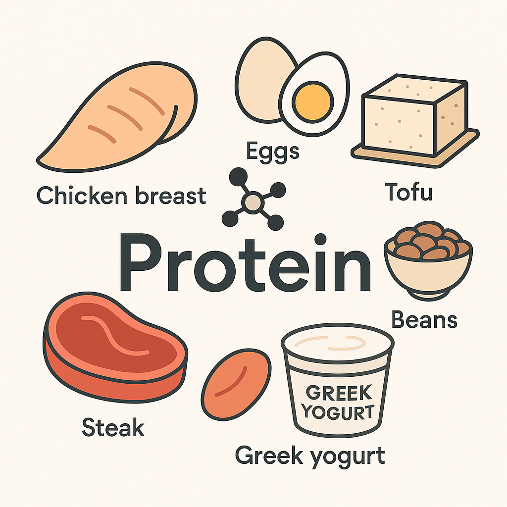

The most important part about weight training is diet, everything that you eat defines who you are. If you hit the gym everyday but eat like shit or don't eat anything at all, no matter how much effort you dedicate at the gym, it will all go to waste.
The most important part about nutrition are the macronutrients, it consists of carbohydrates, fats, and proteins. These 3 are the most critical building blocks for your workout journey and I will explain what each do and how they are beneficial. I won't go into details about the micronutrients, such as vitamines and omega 3, because even though they are important but most people have a sufficient about of them.
Carbs (short for carbohydrates) are basically your body's main source of energy. They break down into glucose, which your body uses for fuel, especially during workouts. If you don't eat enough carbs, your body might start breaking down muscle for energy—and we don't want that.
There are two main types: simple and complex. Simple carbs are the fast-digesting kind—like sugar, candy, fruit, or soda. They give you quick energy but burn out fast. Complex carbs are stuff like rice, oats, pasta, and potatoes. These digest slower, keep you full longer, and give you steady energy.
When you hit the gym, your body mainly uses something called glycogen, which is just stored carbs in your muscles and liver. That's why carbs are so important—if your glycogen is low, your workouts will feel like garbage, and you won't lift as strong. Also, carbs help with recovery. After lifting, eating carbs helps refill your glycogen so you're ready for your next workout. Don't skip them. Carbs don't make you fat—eating too much of anything does. Just choose better sources like fruits, veggies, rice, potatoes, and oats instead of loading up on junk.
Personally I like to eat complex or slow carbs like oatmeal, an hour before workout, if I am short on time, I will eat simple carbs like white rice instead. It's suggested that consuming complex carb before gym and simple carbs right after gym help performance and recovery.
Fats, sounds like the devil if you are trying to lose weight, but it's actually super important. Your body needs fat to survive—it helps with hormone production (like testosterone, which is huge for muscle growth), supports brain function, and helps you absorb vitamins (A, D, E, and K). Remember, everything in moderation is good.
There are a few types of fat. You've got healthy fats like the ones in eggs, avocado, nuts, olive oil, and fatty fish. Then there are the not-so-great ones—like trans fats found in processed junk and fried food. Those are the ones you want to limit, but you don't need to avoid fat altogether. When you are on a weightloss journey, you can lower fat intake to 1g of fat per bodyweight(kg) anything lower will screw up your hormones that means lower energy, bad mood, and possibly slower gains.
Fat also keeps you full longer than carbs do, which helps if you're trying to stay on track with your diet. Just remember that fat has more calories per gram (9 calories vs. 4 in carbs and protein), so it adds up fast. That doesn't mean fat is bad—it just means you gotta portion it smart. So yeah, don't fear fat. Just stick to the good kinds and make sure it's part of a balanced diet. You're not gonna get jacked living off protein shakes and rice alone.
Fat also keeps you full longer than carbs do, which helps if you're trying to stay on track with your diet. Just remember that fat has more calories per gram (9 calories vs. 4 in carbs and protein), so it adds up fast. That doesn't mean fat is bad—it just means you gotta portion it smart. So yeah, don't fear fat. Just stick to the good kinds and make sure it's part of a balanced diet. You're not gonna get jacked living off protein shakes and rice alone.
If you're not getting enough protein, you're basically wasting your workouts. You'll still be sore, but your body won't have the material it needs to recover and grow. So yeah, protein is a must if you actually want results. Good sources of protein include stuff like chicken, beef, fish, eggs, Greek yogurt, protein shakes, tofu, and beans. Aim to spread it throughout your meals instead of eating it all at once—your body can only use so much at a time.
How much should you eat? A good rule of thumb is around 0.7 to 1 gram of protein per pound of body weight,. So if you weigh 160 lbs, try to get at least 120-160 grams a day. However, if you are overweight, say 250lb, ain't no way you'll need 250g of protein everyday, thats way too much. Instead I like to do 1 gram of protein per pound of target body weight. For example, if you are currently 250lb and want to weight 200lb, then eat 200g of protein a day. Remember, this method works if you got decent amount of belly fat, if you are tall and only carry a bit of belly fat then just eat at you current body weight of protein would be fine. Sounds like a lot, but it's doable once you plan it out.
The most important part about dieting, whether if you are trying to lose weight or gain weight, it is all about calories. Sure, a healthy diet will help you staying more healthy, but eating too much will also make you gain weight, the opposite also work, if you eat at a calorie deficit, even if you are eating Mcdonald everyday, you will still lose weight. Those who claim that they can gain weight drinking water everyday have no idea what they are talking about. The law of Conservation of Energy states that energy cannot be created or destroyed, water has no calories, so you must have been getting those calories from somewhere else, first step to gain weight or lose weight is to quit lying. With this idea in mind, lets dive in on some basics regarding calories.
You can see calories as gas for a car, without calories the car won't run, basically you will die. Too much calorie will cause the car heavy, which slows down the vehicle. The human body is much more complex than this, if your car have a full tank, then it might take days or weeks before you need a refill, but your body is constantly burning calories, this is called BMR or basal metabolic rate, the BMR represents the minimum amount of calorie your body need in order to stay alive. Activity such as breathing, making your heart beat, basically anything to make you stay alive, costs calories. TDEE, which stands for Total Daily Energy Expenditure, this is the amount of calories that your body burns every day to keep you the same weight. BMR varies base on individual, such as your age, height,weight and sex. TDEE on the other hand various based on your activity level, keep in mind that TDEE is is based on BMR, the formula is BMR x your activity level = TDEE. If you want to lose weight, then you can calculate your current TDEE and eat 500 calories below that amount, if you want to gain weight, you need to eat an extra 500 calories every day. Of course, you can eat more or less than 500 calories, I'd recommend 500 just for consistency and health.
A pound of fat is equivalent to 3,500 calories, so if you have a deficit of 500 calories every day for a whole week, then you can expect to lose a pound of fat per week. It might be tempting to go for a bigger deficit than that, but keep in mind that your body is very efficient. If you're in too big of a deficit, your body will start cutting expenses--your muscles. And if you lose too much muscle, you'll burn fewer calories than expected. As a result, it will be harder for you to lose weight, and you may end up skinny fat. If you are obese or very overweight, then you can take a 1,000-calorie deficit per day for a couple of weeks, but slowly, you should transition to a 500-calorie deficit. For weight gain, if you are bone skinny, then honestly just eat as much as you can. But do keep in mind that a lot of the extra calories will convert to fat. A 500-calorie surplus will keep a better balance between fat gain and muscle gain. Remember: it's harder to gain muscle than to lose fat, so aim for muscle first, then cut the fat later.
Note:If you want to gain muscle, staying in a calorie deficit will only take you so far. When you start working out, you might gain a decent amount from newbie gains, but once the beginner phase ends, you'll hit a stalemate. That's when you have to decide whether you want to gain more muscle by eating at a surplus, or keep the deficit—but make no real gains. Remember: if you have no muscle underneath the fat, you'll have nothing left once the fat is gone. Focus on muscle gain first, and then you'll be on your way to achieving that dream physique!